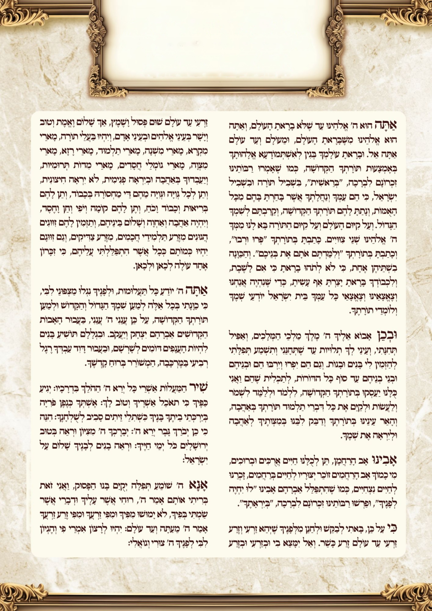

הקדמה לשמונה עשרה
לעילוי נשמת אליהו ז״ל
בן יבדלחט״א חיים מאיר עזריאל
- א.יכוון לקיים מצות תפילה, כי מצות צריכות כוונה.1
- ב.יתבונן שהשכינה כנגדו, ועומדים לפני מלך מלכי המלכים הקב״ה, שחוקר כל מחשבות וכוונות.2
- ג.יחשוב מרוממותו ית׳, שהוא רם ונשא שוכן עד וכל יכול.3
- ד.יתבונן בשפלות האדם, שצריך רחמים מרובים בכל רגע.4
- ה.יחשוב כאילו עומד עתה בבהמ״ק בקה״ק לפני הכפרת.5
- ו.יתפלל דרך תחנונים כעני בפתח, שנצרך מאד, ומבקש רחמים לפני המלך.6
- ז.וישים אל לבו שאין שום נברא – מלאך או אדם – שיכול למלאות שאלתו כי אם ע״י רצונו של הקב״ה.7
עצה טובה – לעבוד על אחד מהסעיפים במשך שבוע,
ולאחר שיתרגל להוסיף עוד סעיף.
קו ׳בית הוראה׳: 077.215.00.94קו קול הלשון: 0733718376
מראי מקומות: 1ע׳ מ״ב סי׳ ק״ו ס״ק ד׳ וסי׳ ס׳ ס״ק י׳. 2שו״ע סי׳ צ״ח סעי׳ א׳. 3ע״פ הרמ״א שם. 4שם. 5שו״ע סי׳ צ״ה סעי׳ ב׳, וסי׳ צ״ד מ״ב ס״ק ג׳ וז׳. 6סי׳ צ״ח סעי׳ ג׳. 7שם מ״ב ס״ק ח׳.